2025-2026学年七年级数学上学期期中模拟卷
强化卷·全解全析
（考试时间：120分钟 试卷满分：120分）
注意事项：
1．答卷前，考生务必将自己的姓名、准考证号填写在答题卡上。
2．回答选择题时，选出每小题答案后，用铅笔把答题卡上对应题目的答案标号涂黑。如需改动，用橡皮擦干净后，再选涂其他答案标号。回答非选择题时，将答案写在答题卡上。写在本试卷上无效。
3．考试结束后，将本试卷和答题卡一并交回。
4．测试范围：北师大版2024七年级上册第一章~第三章。
一、选择题（本题共12小题，每小题3分，共36分。在每小题给出的四个选项中，只有一项是符合题目要求的。）
1．下列四个数中，是负数的是（ ）
A．
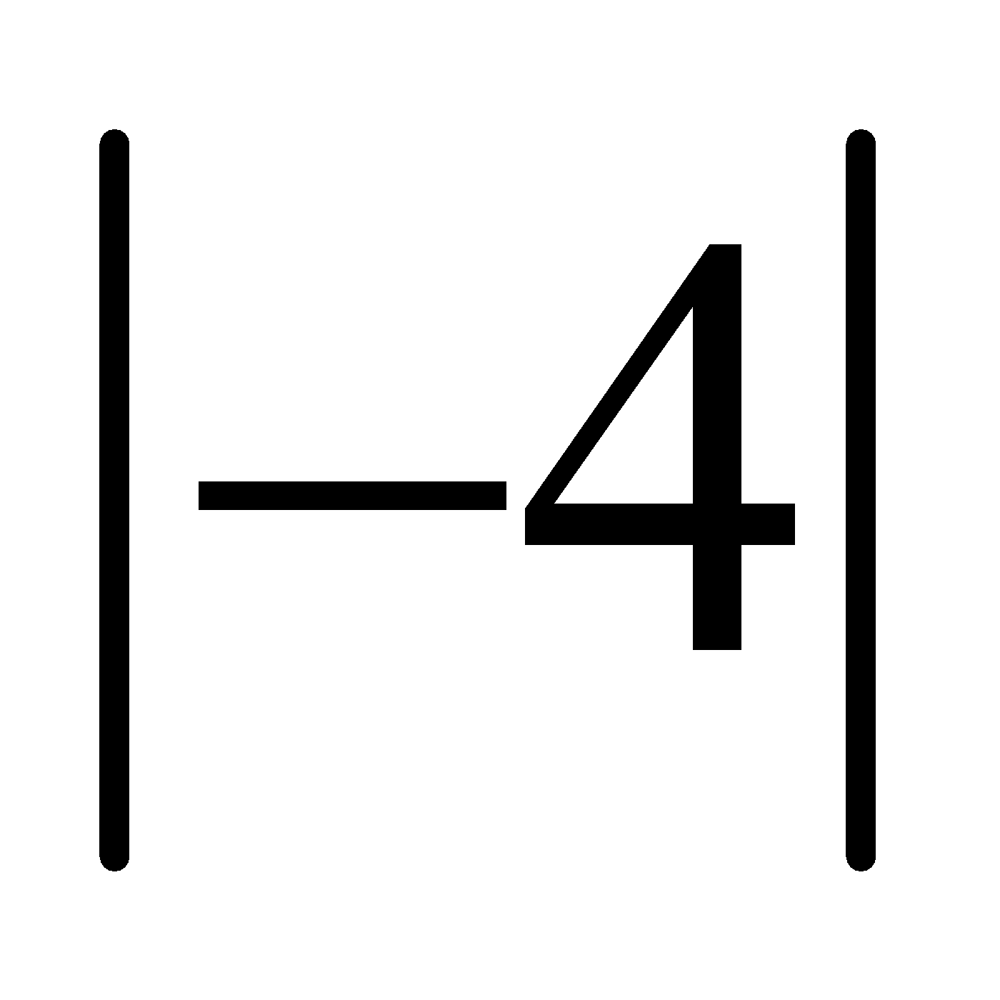
B．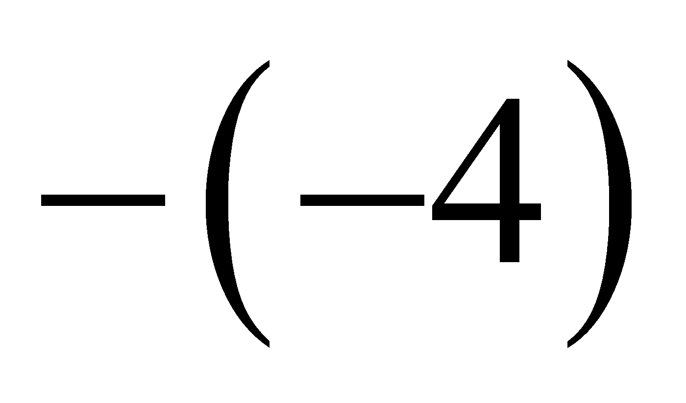
C． D．
D．
【答案】D
【分析】本题主要考查了有理数的有关计算，分别根据绝对值的性质、互为相反数的定义和乘方的意义，计算出各个选项中式子的结果，然后进行判断即可，解题的关键是熟练掌握绝对值的性质、互为相反数的定义和乘方的意义．
【详解】 、
、
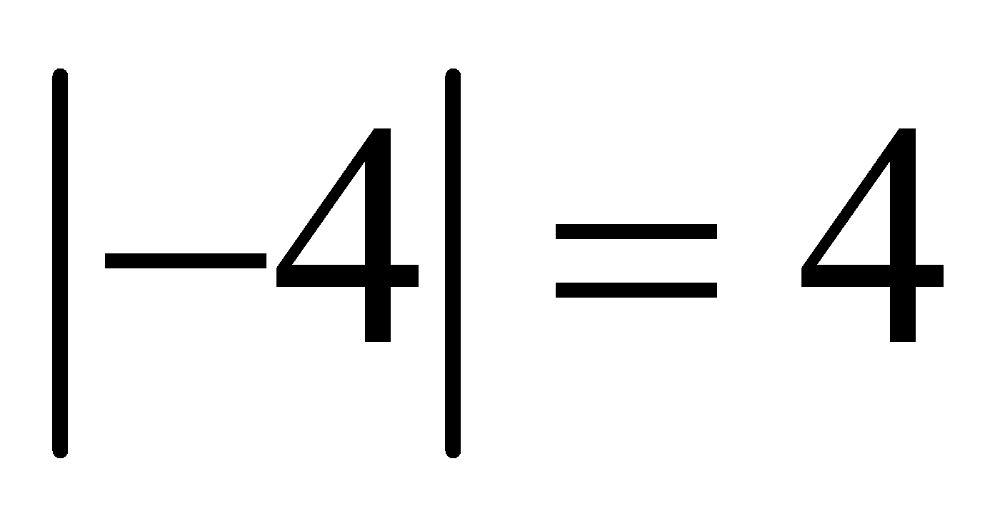
，结果为正，不符合题意； 、
、 ，结果为正，不符合题意；
，结果为正，不符合题意；
 、
、
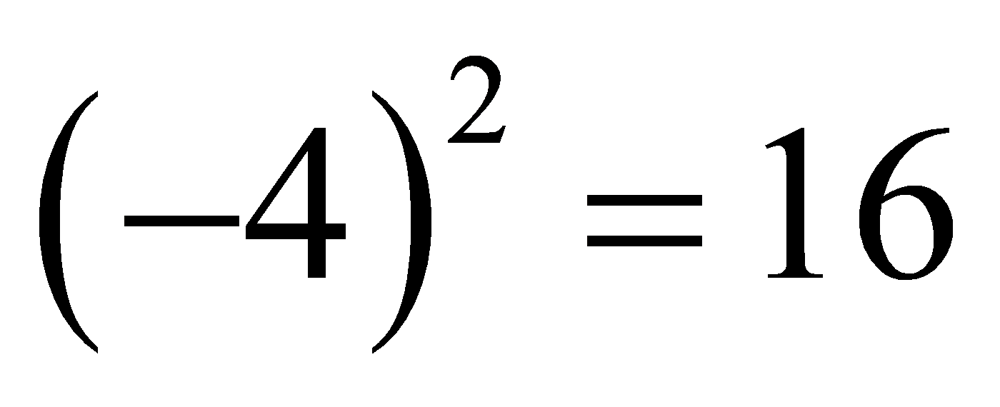
，结果为正，不符合题意； 、
、
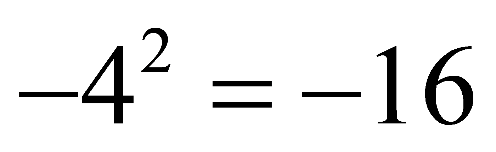
，结果为负，符合题意；故选：．
2．2024年巴黎奥运会乒乓球比赛已经圆满落幕，中国乒乓球队再次展现了其王者之师的风采，更以史无前例的壮举——包揽全部五块金牌，为这场体育盛宴划上了最为辉煌的句号．比赛中，所采用的乒乓球的标准尺寸是 ，下列尺寸的乒乓球中哪一个是不合格的（ ）
，下列尺寸的乒乓球中哪一个是不合格的（ ）
A．
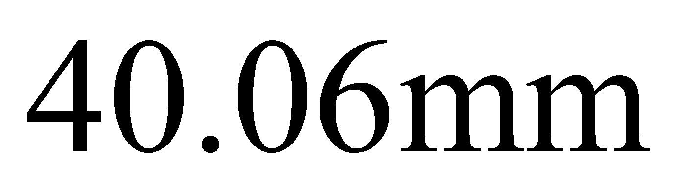
B． C．
C．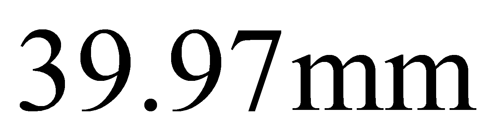
D．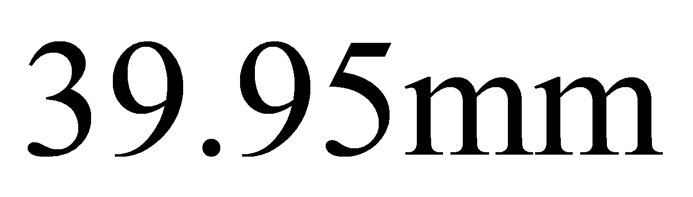
【答案】A
【分析】本题考查了正负数的应用，由标准得出范围
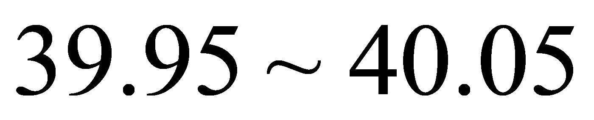
，即可求解；理解标准尺寸是解题的关键.【详解】解： 乒乓球的标准尺寸是，
乒乓球的标准尺寸是，
 乒乓球的合格尺寸在范围内．
乒乓球的合格尺寸在范围内．
故选A．
3．已知
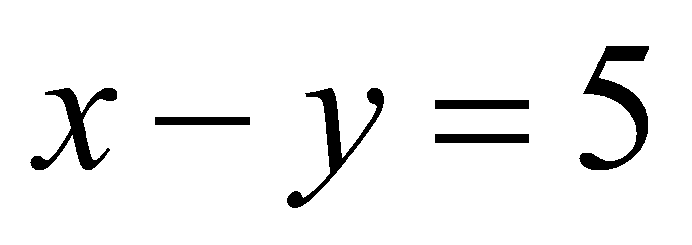
， ，则
，则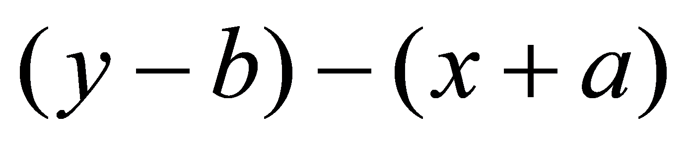
的值为（ ）A．8 B． C．2 D．
C．2 D．
【答案】D
【分析】将整式去括号，再添括号，化成
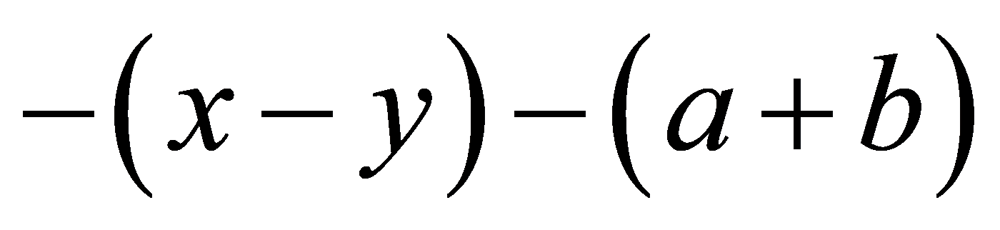
，然后把已知整体代入计算即可．【详解】解：∵，
∴
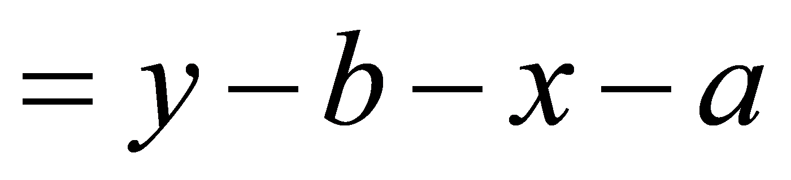
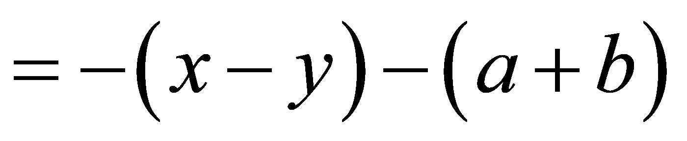
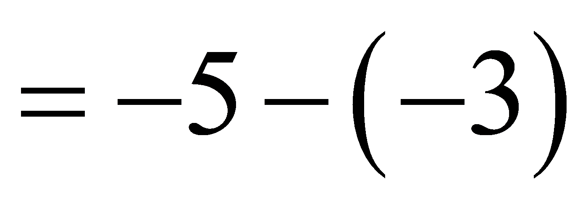

故选：D．
【点睛】本题考查整式化简求值，去括号与添括号，熟练掌握去括号与添括号法则是解题的关键，注意整体思想的运用．
4．下列说法正确的是（ ）
A． 的系数是
的系数是 ，次数是2 B．
，次数是2 B．
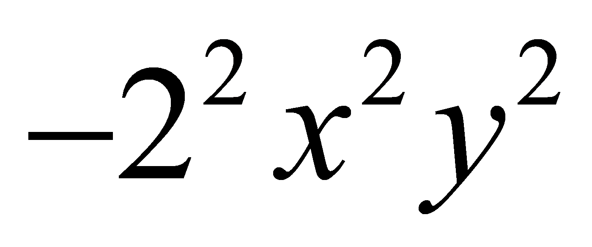
是六次单项式C．
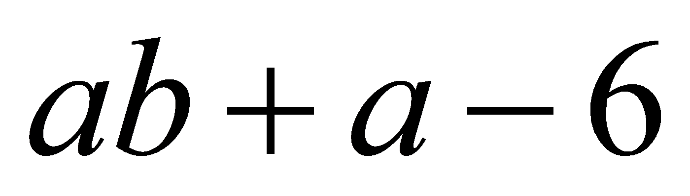
的常数项是6 D． 是按字母
是按字母 升幂排列
升幂排列【答案】A
【分析】本题考查了单项式和多项式的知识，熟练掌握单项式、多项式的相关概念是解题关键．由数和字母的积组成的代数式叫做单项式；单项式中的数字因数叫做这个单项式的系数；单项式中，所有字母的指数和叫做这个单项式的次数．几个单项式的和，叫做多项式；多项式中的每个单项式叫做多项式的项，这些单项式中的最高项次数，就是这个多项式的次数；多项式中不含字母的项叫做常数项．
根据单项式和多项式的相关概念逐项分析判断即可．
【详解】解：A．的系数是，次数是2，该说法正确，符合题意；
B．是四次单项式，原说法不正确，不符合题意；
C．的常数项是 ，原说法不正确，不符合题意；
，原说法不正确，不符合题意；
D．是按字母降幂排列，原说法不正确，不符合题意．
故选：A．
5．观察下列算式： ，
， ，
， ，
， ，
， ，那么
，那么 的末位数字为（ ）
的末位数字为（ ）
A．1 B．3 C．7 D．9
【答案】A
【分析】从运算的结果可以看出尾数以 、
、 、
、 、
、 四个数字一循环，用
四个数字一循环，用
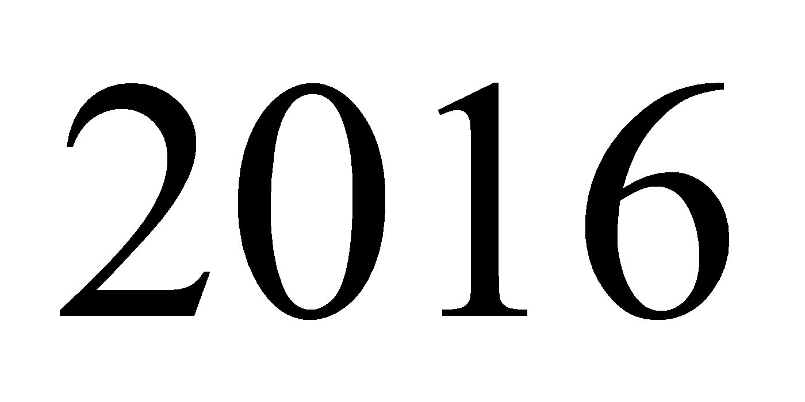
除以 ，余数是几就和第几个数字相同，由此解决问题即可．
，余数是几就和第几个数字相同，由此解决问题即可．【详解】解：已知 ，末位数字为，
，末位数字为，
，末位数字为，
，末位数字为，
，末位数字为，
，末位数字为，
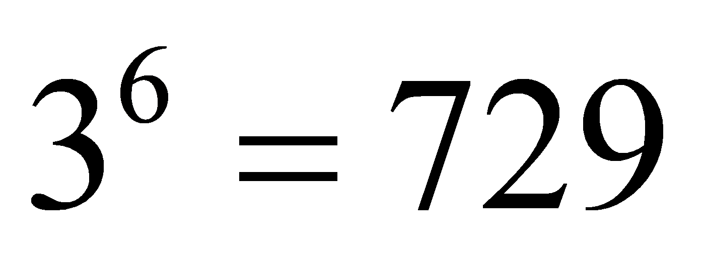
，末位数字为，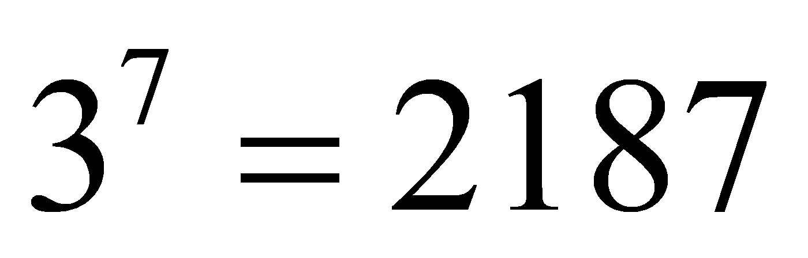
，末位数字为，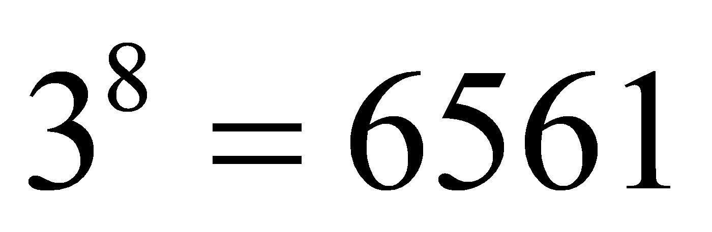
，末位数字为，
由此得到：的， ，，，
，，， ，
， ，，
，， ，次幂的末位数字以、、、四个数字为一循环，
，次幂的末位数字以、、、四个数字为一循环，
又
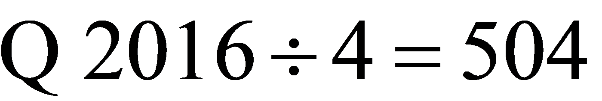
，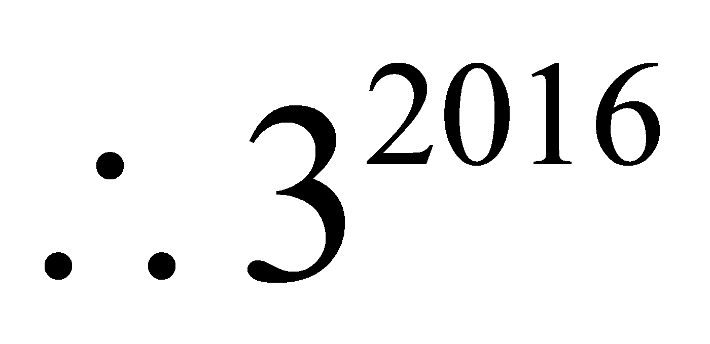
的末位数字与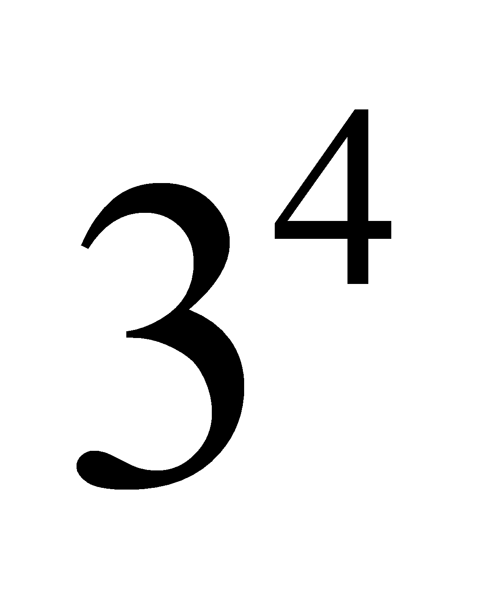
的末位数字相同是．故选： ．
．
【点睛】此题考查尾数特征及规律型：数字的变化类，通过观察得出的乘方的末位数字以、、、四个数字为一循环是解决问题的关键．
6．将全体正偶数排成一个三角形数阵：（如图）按照以下规律排列，第10行第9个数是（ ）

A．104 B．106 C．108 D．110
【答案】C
【分析】本题考查数字的规律探索，理解偶数特征发现数字规律是解题关键．
首先找出三角形数阵的规律，求出前 行正偶数的个数，然后由偶数的特点求出第行的第9个偶数．
行正偶数的个数，然后由偶数的特点求出第行的第9个偶数．
【详解】解：设根据题意观察得知,第 行有个偶数，
行有个偶数，
∴前行共有正偶数
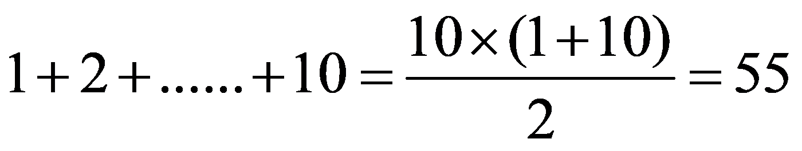
（个），∴第 个偶数为
个偶数为 ,是第行的最后一个，
,是第行的最后一个，
∴第行从左到右的第9个（即第行倒数第二个）偶数为 ．
．
故选：C．
7．点 在数轴上分别表示数
在数轴上分别表示数 ，
， ，若两点之间的距离表示为
，若两点之间的距离表示为 ，则在数轴上两点之间的距离
，则在数轴上两点之间的距离
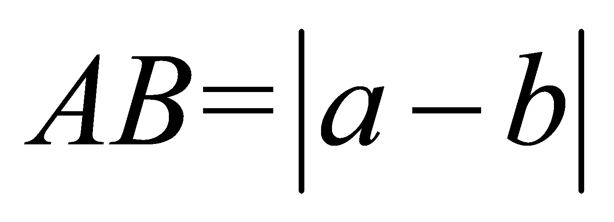
．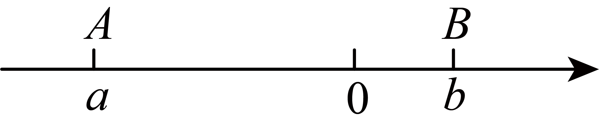
①数轴上表示 、的两点之间的表示为
、的两点之间的表示为 ； ②若
； ②若 ，则
，则 ； ③若存在，使
； ③若存在，使
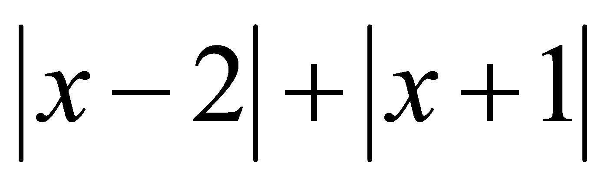
的值最小时，则 ； ④若
； ④若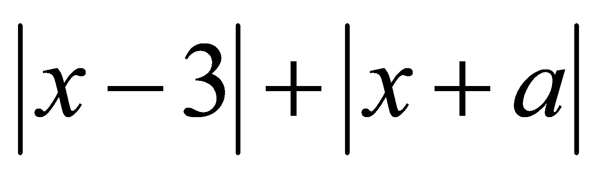
的最小值是，则 ．其中正确的个数是（ ）
．其中正确的个数是（ ）A． B．
B．
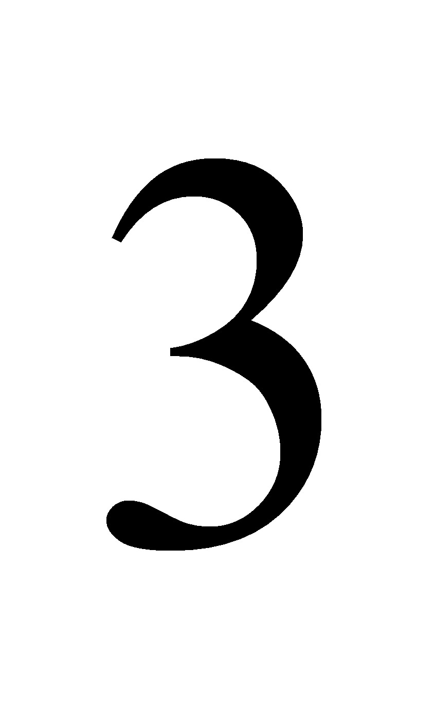
C．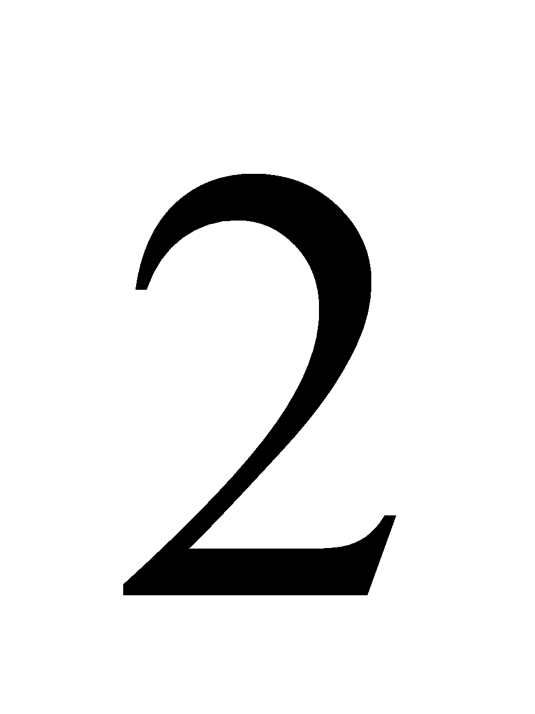
D．
【答案】D
【分析】本题考查了数轴上两点间的距离，化简绝对值，以及整式的加减，数形结合是解答本题的关键．①数轴上两点距离等于两个点表示的数相减的绝对值，②分区间讨论，求得x的值，③分区间讨论，求得x的值，④举例说明即可．
【详解】解：①数轴上表示x、的两点之间的距离表示为
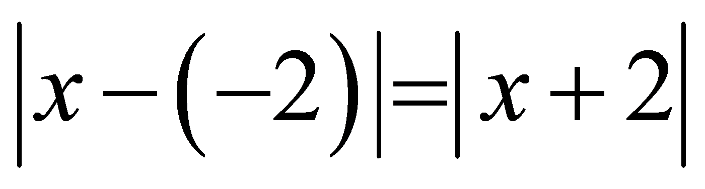
，正确，②当
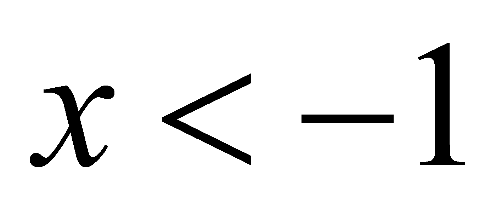
时，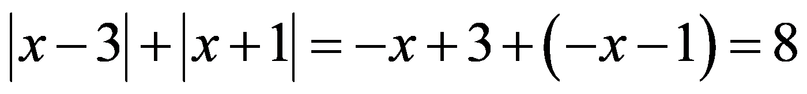
，解得：，当
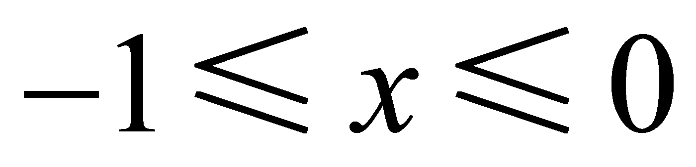
时，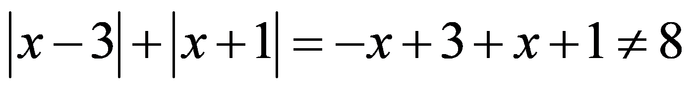
，等式不成立，故舍去，当
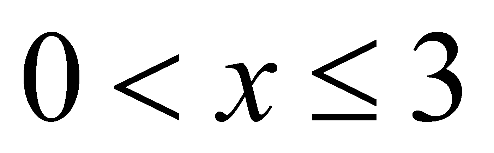
时，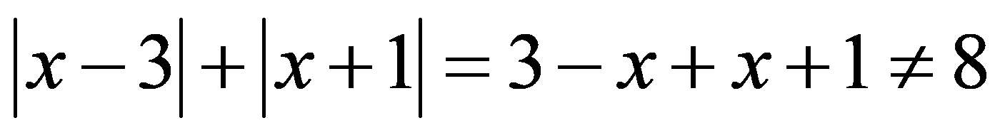
，等式不成立，故舍去，当 时，
时，
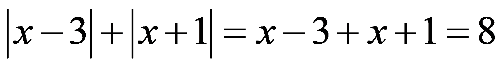
，解得： ，
，∴若，则或，错误，
③当时，
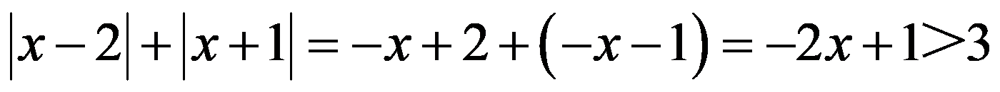
，当时，
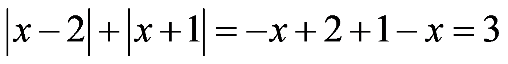
，当
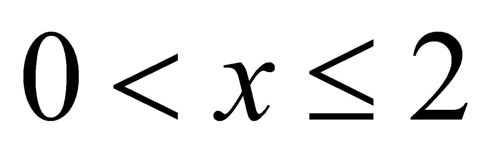
时，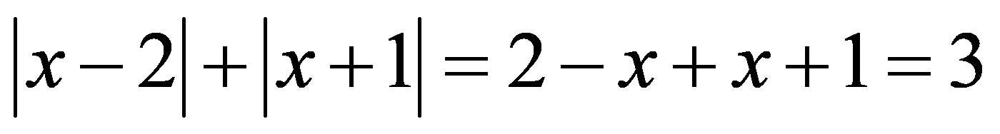
，当
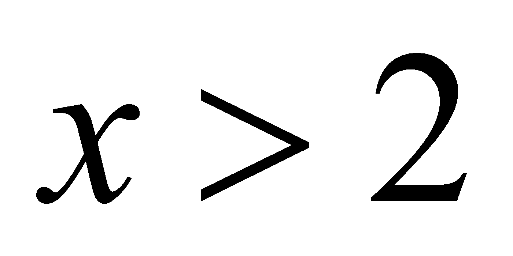
时，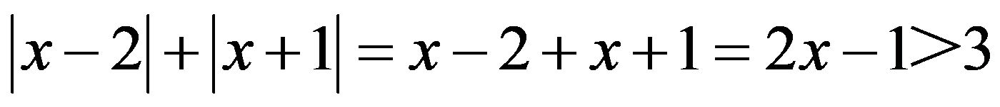
，∴若存在x，使的值最小时，则 ，错误，
，错误，
④∵x的值不确定，
∴a的值不确定，如 ，
， 时，2到3和1的距离之和等于2，也符合题意，错误，
时，2到3和1的距离之和等于2，也符合题意，错误，
故选：D．
8．将一些相同的“〇”按如图所示的规律依次摆放，观察每个“龟图”的“〇”的个数，则第7个“龟图”中“〇”的个数为（ ）

A．44 B．47 C．50 D．53
【答案】B
【分析】设第n个“龟图”中有 个“〇”（n为正整数），观察“龟图”，根据给定图形中“〇”个数的变化可找出变化规律“
个“〇”（n为正整数），观察“龟图”，根据给定图形中“〇”个数的变化可找出变化规律“
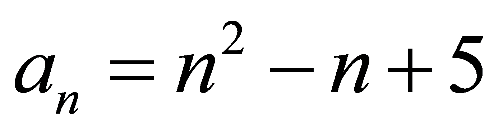
（n为正整数）”，再代入 即可得出结论．
即可得出结论．【详解】解：设第n个“龟图”中有个“〇”（n为正整数）．
观察图形，可知：
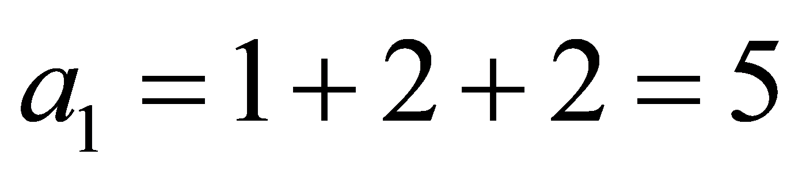
，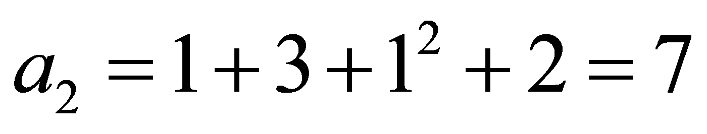
，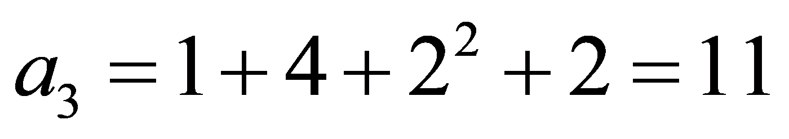
，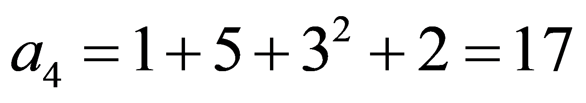
，…，∴（n为正整数），
∴．
故选：B．
【点睛】本题主要考查了图形的规律，根据各图形中“〇”个数的变化找出变化规律“（n为正整数）”是解题的关键．
9．若有理数a，b在一条不完整的数轴上的位置如图所示，则下列各式：①；②；③ ；④
；④ ；⑤．其中正确的有（ ）
；⑤．其中正确的有（ ）
A．1个 B．2个 C．3个 D．4个
【答案】C
【分析】本题考查根据数轴上点的位置，判断式子的符号．熟练掌握数轴上的数从左到右依次增大，是解题的关键．根据数轴，得出 ，
， ，再逐一判断式子的符号即可．
，再逐一判断式子的符号即可．
【详解】解：由图可知，，
∴，
∴，故①不正确，不符合题意；
∵，
∴，
∴，故②正确，符合题意；
∵，
∴，
∴，故③不正确，不符合题意；
∵，
∴，故④正确，符合题意；
∵，，
∴，故⑤正确，符合题意；
综上：正确的有②④⑤，共3个，
故选：C．
10．如图，动点 从到原点距离为的点处向原点方向跳动，第一次跳到
从到原点距离为的点处向原点方向跳动，第一次跳到 的中点
的中点 处，第二次从点跳到
处，第二次从点跳到 的中点
的中点 处，第三次从点跳到
处，第三次从点跳到 的中点
的中点 处，如此不断跳动下去，第次跳动后，该动点到原点
处，如此不断跳动下去，第次跳动后，该动点到原点 的距离为（ ）
的距离为（ ）
A． B． C． D．
D．
【答案】B
【分析】本题考查了点的运动规律，根据计算可得每次运动后点距原点的距离是上一个点距原点距离的一半，据此即可求解，根据计算找到点的运动规律是解题的关键．
【详解】解：第一次跳动到的中点处，得，
第二次从跳到的中点处，得，
第三次从点跳到的中点处，得，
，
∴第次跳动后，该质点到原点的距离为，
∴第次跳动后，该质点到原点的距离为，
∵，
∴，
故选：．
11．小明在一本数学书中看到了这样一个探究活动；对依次排列的两个整式m，n按如下规律进行操作：
第1次操作后得到整式串：m，n， ；
；
第2次操作后得到整式串：m，n，，；
第3次操作后…，
其操作规则为：每次操作增加的项，都是用上一次操作得到的最末项减去其前一项的差，小明将这个活动命名为“回头差”游戏．则该“回头差”游戏第2024次操作后得到的整式串各项之和是（ ）
A． B．m C． D．
B．m C． D．
【答案】A
【分析】本题主要考查的是整式的加减运算，代数式的规律探究，掌握探究的方法，并总结概括规律，并能灵活运算是解决本题的关键．依据题意，先逐步分析前面几次操作，可得整式串每6个整式一循环，再求解每6个整式的整式之和为：，2024次后出现2026个整式，结合，从而可以得解．
【详解】解：第1次操作后得到的整式串：m，n，；
第2次操作后得到的整式串m，n，，；
第3次操作后得到的整式串m，n，，， ；
；
第4次操作后得到的整式串m，n，，，，；
第5次操作后得到的整式串m，n，，，，，m；
第6次操作后得到的整式串m，n，，，，，m，n；
第7次操作后得到的整式串m，n，，，，，m，n，；
……
第2024次操作后得到的整式串m，n，，，，，……m，n，，；共2026个整式；
归纳可得，以上整式串每六次一循环．每6个整式的整式之和为： ，
∵
第2024次操作后得到的整式中，求最后四项之和即可．
∴这个和为．
故选：A．
12．动手操作：做一个正方体木块，在正方体的各面分别写上1，2，3，4，5，6这6个不同的数字，若它可以摆放成如图所示的两种不同位置，请你判断数字5对面的数字是（ ）

A．1 B．2 C．3 D．6
【答案】D
【分析】根据图形以及数字的摆放，第一图可得的下面为1，1的右边为4，第二个图可知的下面是5，5的右边是2，画出展开图即可求解．
【详解】解：根据图形以及数字的摆放，第一图可得的下面为1，1的右边为4，
第二个图可知的下面是5，5的右边是2
将正方形展开如图所示，
∴的对面是，
故选：D．
【点睛】本题考查了正方体展开图，相对面上的字，注意数字的摆放是解题的关键．
二、填空题（本题共6小题，每小题2分，共12分．）
13．下列各式 ①： ；②：
；②： ；③：；④：中最符合书写规范的是 .
；③：；④：中最符合书写规范的是 .
【答案】②，
【分析】代数式的书写要求：在代数式中出现的乘号，通常简写成“ ”或者省略不写；数字与字母相乘时，数字要写在字母的前面；在代数式中出现的除法运算，一般按照分数的写法来写，带分数要写成假分数的形式；根据代数式的书写要求逐项判断即可得解，
”或者省略不写；数字与字母相乘时，数字要写在字母的前面；在代数式中出现的除法运算，一般按照分数的写法来写，带分数要写成假分数的形式；根据代数式的书写要求逐项判断即可得解，
本题考查了代数式，熟练掌握代数式的书写要求是解此题的关键.
【详解】解：①：中的乘号应省略不写，且 写在
写在 前面，
前面，
故①错误，不符合题意；
②：符合书写规范，故②正确，符合题意；
③：应按照分数的写法来写，
故③错误，不符合题意；
④：中带分数要写成假分数的形式，
故④错误，不符合题意；
故答案为：②．.
14．若，且，都是有理数，则 ．
【答案】9
【分析】本题考查偶次幂、绝对值的非负性，非负数的性质，有理数的乘方，求出、的值是解决问题的关键．
根据偶次幂、绝对值的非负性，非负数的性质，求出、的值再代入计算即可．
【详解】解：因为，
所以 ，
， ，
，
即， ，
，
所以，
故答案为：9．
15．多项式 的各项系数之积是 ．
的各项系数之积是 ．
【答案】3
【分析】根据多项式各项系数的定义求解．多项式的各项系数是单项式中各项的系数，由此即可求解．
【详解】解：多项式的各项系数之积为：
．
故答案为：3．
【点睛】此题主要考查了多项式的相关定义，解题 的关键是熟练掌握多项式的各项系数和次数的定义即可求解．
16．下列说法：①若，则x为负数；②若 不是负数，则a为非正数；③；④若
不是负数，则a为非正数；③；④若 ，，则
，，则 ．其中正确的结论有 ．（填序号）
．其中正确的结论有 ．（填序号）
【答案】②③④
【分析】本题主要考查了绝对值的性质，依据题意，根据绝对值的性质逐个分析判断可以得解．
【详解】解：由题意，若，
∴，
∴．
∴①错误．
若不是负数，
∴．
∴ ，即a为非正数．
，即a为非正数．
∴②正确．
∵，
∴，
∴③正确．
若，，，
∴．
∴．
∴④正确．
故答案为：②③④．
17．如图，数轴上点 分别表示数
分别表示数 ，则
，则 化简的结果为 ．
化简的结果为 ．
【答案】
【分析】根据数轴上有理数的位置，绝对值的化简，合并同类项，计算判断即可．
本题考查了数轴上表示有理数，绝对值的化简，合并同类项，熟练掌握数绝对值的化简是解题的关键．
【详解】解：根据题意，得，
∴， ，
，
∴，
故答案为：．
18．实数a，b满足 ，则
，则 的最小值为 ．
的最小值为 ．
【答案】
【分析】利用绝对值的定义：“绝对值代表与原点的距离”可知答案．
【详解】解：∵，
∴，
表示a到，2的距离与b到的距离之和为8，
∵时，
时，，
∴，
∴．
故答案为：．
【点睛】本题考查了绝对值，掌握绝对值的意义是关键．
三、解答题（本题共8小题，共72分．解答应写出文字说明、证明过程或演算步骤．）
19．计算：
(1)；
(2) ；
；
(3) ；
；
(4)；
(5)．
【答案】(1)
(2)
(3)
(4)
(5)
【详解】（1）解：

；
（2）解：


 ；
；
（3）解：


；
（4）原式
 ；
；
（5）原式
【点睛】本题考查了有理数的混合运算，熟练掌握有理数的运算法则是解题的关键．
20．（1）设a表示任意一个整数，用含a的代数式表示任意一个偶数及任意一个奇数；
（2）一个三位数的个位上的数字为x，十位上的数字为y，百位上的数字为z，用含x，y，z的代数式表示这个三位数．
【答案】（1）偶数 ，奇数；（2）
，奇数；（2）
【分析】本题考查了代数式．
（1）根据偶数和奇数的定义用代数式进行表示即可；
（2）根据百位上的数字乘以100，十位上的数字乘以10，个位上数字乘以1，然后把得到的数加起来，即为所表示的是三位数．
【详解】解：（1）偶数表示：，
奇数表示：；
（2）因为个位，十位，百位上的数字分别是x，y，z，
所以这个三位数为：．
21．出租车司机刘师傅某天上午从 地出发，在东西方向的公路上行驶营运，如表是每次行驶的里程（单位：千米）（规定向东走为正，向西走为负；×表示空载，○表示载有乘客，且乘客都不相同）．
地出发，在东西方向的公路上行驶营运，如表是每次行驶的里程（单位：千米）（规定向东走为正，向西走为负；×表示空载，○表示载有乘客，且乘客都不相同）．
次数 | 1 | 2 | 3 | 4 | 5 | 6 |
里程 |
|
|
|
|
| |
载客 | × | ○ | ○ | × | ○ | ○ |


(1)刘师傅走完第6次里程后，他在地的什么方向？离地有多少千米？
(2)已知出租车每千米耗油约0.08升，刘师傅开始营运前油箱里有8升油，若少于3升，则需要加油，请通过计算说明刘师傅这天上午中途是否可以不加油；
(3)已知载客时3千米以内收费10元，超过3千米后每千米收费1.5元，问刘师傅这天上午走完6次里程后的营业额为多少元？
【答案】(1)他在A地的西方，离A地有10千米
(2)可以不加油
(3)这天上午走完6次里程后的营业额为94元．
【分析】本题考查的是正负数的实际应用，有理数的加法的实际应用，绝对值的应用，分段收费的计算，同时考查了有理数的混合运算．
（1）将6次里程相加，结果为正，则在东方，否则，在西方，结果的绝对值为与A地的距离；
（2）将6次里程的绝对值相加，即可得出这天上午行驶总里程，再计算出油耗，即可求解；
（3）第一次和第四次为空载，故第一次和第四次营业额为0元，分别计算出其他四次里程的营业额，相加即可．
【详解】（1）解：根据题意得：
（千米），
∵，
∴刘师傅走完第6次里程后，他在A地的西方，离A地有10千米．
（2）解： （千米），
（千米），
 （升），
（升），
∵，
∴刘师傅这天上午中途可以不加油；
（3）解：根据题意得：第一次和第四次为空载，故第一次和第四次营业额为0元，
第二次营业额： （元），
（元），
第三次营业额：（元），
第五次营业额： （元），
（元），
第六次营业额：（元），
∴总营业额：（元），
答：这天上午走完6次里程后的营业额为94元．
22．我们平常用的数都是十进制的，如： ．表示十进制的数要用10个数码（又叫数字）：0，1，2，3，4，5，6，7，8，9．电子计算机中用的二进制只有两个数码：0，1．二进制数可以转化为十进制数，如：二进制数，等于十进制数5；二进制数
．表示十进制的数要用10个数码（又叫数字）：0，1，2，3，4，5，6，7，8，9．电子计算机中用的二进制只有两个数码：0，1．二进制数可以转化为十进制数，如：二进制数，等于十进制数5；二进制数 ，等于十进制数22，那么二进制数110101等于十进制数多少呢？
，等于十进制数22，那么二进制数110101等于十进制数多少呢？
【答案】二进制数11010等于十进制数53
【分析】本题考查了有理数混合运算的应用，二进制数转化为十进制数的方法，掌握二进制数转化十进制数之间的规则是解题关键．
根据题目信息，参照题中两个二进制数转化为十进制数的方法，可得 ，利用有理数的乘方法则及加法法则得出结果．
，利用有理数的乘方法则及加法法则得出结果．
【详解】解：根据二进制数转化为十进制数的方法，可得，
二进制数

 ，
，
故二进制数11010等于十进制数53．
23．我们知道在化简 的时候，需要判断a的正负：当
的时候，需要判断a的正负：当 时，；当
时，；当 时，
时， ．
．

(1)已知a，b，c三个数在数轴上的对应的点如图所示：
用“ ”、“
”、“ ”或“
”或“ ”填空，
”填空，
 _____0，
_____0， ______0，_______0，
______0，_______0，
化简：．
(2)思维扩展：由“当时，；时，”可以推出：
当时，；当时，．
应用这个结论，解决下列问题：
已知x，y，z是有理数， ，
， ，化简：
，化简： ．
．
【答案】(1) ；
；
(2)
【分析】本题考查了绝对值的化简，整式的加减运算，有理数的运算，解题的关键是熟练掌握绝对值的化简；
（1）根据数轴可得 ，即可判断所求式子的正负，再化简绝对值即可；
，即可判断所求式子的正负，再化简绝对值即可；
（2）由得，原式可化为：，根据，，可知x，y，z中一正两负或两正一负，据此化简即可．
【详解】（1）解：由数轴知：，
 ，
，
故答案为：，
，
 ；
；
（2）解： ，
，
 ，
，

 ，
，
，，
当x，y，z中一正两负时，，
当x，y，z中两正一负时， ，
，
综上所述，的值为：．
24．（1）数学中有很多可逆的推理，例如：如果那么利用可逆推理，已知可求的运算，记为 ，如
，如 ，则
，则 ，则．根据定义，填空：_____：
，则．根据定义，填空：_____： _______．
_______．
（2）若有如下运算性质：，，根据运算性质填空，填空：若 ，则
，则 _____；
_____； _____．
_____．
（3）在数轴上有三点， ，
， 分别表示数，，
分别表示数，， ，其中是第1问中所表示的数，是
，其中是第1问中所表示的数，是 的系数，是直四棱柱的面数．点，，同时开始在数轴上运动，若点和点分别以每秒3个单位长度和4个单位长度的速度向左运动．点以每秒2个单位长度的速度向右运动．若点与点的距离表示为，点与点的距离表示为
的系数，是直四棱柱的面数．点，，同时开始在数轴上运动，若点和点分别以每秒3个单位长度和4个单位长度的速度向左运动．点以每秒2个单位长度的速度向右运动．若点与点的距离表示为，点与点的距离表示为 ，点与点的距离表示为
，点与点的距离表示为 ，运动时间为
，运动时间为 秒．是否存在，使得
秒．是否存在，使得 的值与无关？若存在，请求出的值：若不存在，请说明理由．
的值与无关？若存在，请求出的值：若不存在，请说明理由．
【答案】（1），；（2），；（3）当 ，
， 时，当，
时，当， 时，的值与无关；
时，的值与无关；
【分析】（1）根据定义可得： ，即可求得结论；
，即可求得结论；
（2）根据运算性质：，进行计算即可；
（3）先分别求解 ，
， ，；可得对应的数分别为
，；可得对应的数分别为 ，，，可得运动中对应的数分别为：
，，，可得运动中对应的数分别为： ，
， ，
， ，求解
，求解 ，，再分情况讨论即可．
，，再分情况讨论即可．
【详解】解：（1）根据定义知：，
∴ ，
， ．
．
（2）根据运算性质，得：，
 ．
．
（3）∵是第1问中所表示的数，是的系数，是直四棱柱的面数．
∴，，；
∴对应的数分别为，，，
∵点和点分别以每秒3个单位长度和4个单位长度的速度向左运动．点以每秒2个单位长度的速度向右运动．
∴运动中对应的数分别为：，，，
∴，
，
当时，
∴ ，
，
当 ，即时，
，即时，
此时，此时的值与无关；
当时，
∴ ，
，
当，即时，
此时 ，此时的值与无关；
，此时的值与无关；
综上：当，时，当，时，的值与无关；
【点睛】本题考查的是新定义运算的含义，乘方运算的逆运算，整式的加减运算，单项式的系数，棱柱的认识，掌握基础知识是解本题的关键．
25．小红和小明在研究绝对值的问题时，碰到了下面的问题：
“当式子 取最小值时，相应的的取值范围是______，最小值是______”．
取最小值时，相应的的取值范围是______，最小值是______”．
小红说：“如果去掉绝对值问题就变得简单了，把数轴分为三段： 和，经研究发现，当时，值最小为”．
和，经研究发现，当时，值最小为”．
小明说：“利用数形结合思想可以解决这个问题，若点、在数轴上分别表示有理数、，、两点之间的距离表示为，则在数轴上、两点之间的距离 ．”
．”
请你根据他们的解题解决下面的问题：
(1)当式子 取最小值时，相应的的取值范围是______，最小值是______．
取最小值时，相应的的取值范围是______，最小值是______．
(2)已知，求的最大值和最小值及相应的的取值范围，并写出解答过程．
(3)求为何值时，式子 有最小值，并求出此最小值．
有最小值，并求出此最小值．
【答案】(1) ，
，
(2)当 最大值为；当
最大值为；当 最小值为
最小值为
(3)，最小值为
【分析】本题考查了绝对值，线段上的点与线段的端点的距离最小，分类讨论是解题关键．
（1）根据绝对值分类讨论求解即可；
（2）根据绝对值分类讨论求解即可；
（3）根据绝对值的几何意义即可求解；
【详解】（1）解：当 时，
时， ；
；
当 时，
时， ；
；
当时， ；
；
当 时，
时， ；
；
当 时，；
时，；
∴式子取最小值时，相应的的取值范围是，最小值是．
故答案为；．
（2）解：当 时，
时， ；
；
当时， 此时
此时 ；
；
当 时，
时， ；
；
∴当最大值为；当最小值为；
（3）解： ，
，
 表示在数轴上的对应点与、
表示在数轴上的对应点与、 、、……、
、、……、 所对应点的距离之和，
所对应点的距离之和，
当 时，
时， 有最小值，最小值为
有最小值，最小值为


 ．
．
26．如图1，数轴上A，B两点表示的数分别是和3，将这两点在数轴上以相同的速度同时相向运动，若A，B分别到达M，N两点，且满足 （k正整数），我们称A，B两点完成了一次“准相向运动”．
（k正整数），我们称A，B两点完成了一次“准相向运动”．

(1)若A，B两点完成了一次“准相向运动”．
①当时，M，N两点表示的数分别为 ， ；
②当k为任意正整数时，求M，N两点表示的数；
(2)如图2所示，若A，B两点完成了两次“准相向运动”，并分别到达两点，若k不变，求两点所表示的数（用含k的式子表示）；

(3)若A，B两点完成了n次“准相向运动”，并分别到达 两点，当时，是否存在点
两点，当时，是否存在点 ，使其表示的数为65？如果存在，求完成的次数n和此时点
，使其表示的数为65？如果存在，求完成的次数n和此时点 所表示的数；如果不存在，说明理由．
所表示的数；如果不存在，说明理由．
【答案】(1)①5， ；②点为，
；②点为， 点为
点为
(2)点为， 点为
点为
(3)存在，为5， 为
为
【分析】（1）①由题意得 ，
， ，进而可得
，进而可得 ，可知，当时，可得，的值，进而可得M，N两点表示的数；
，可知，当时，可得，的值，进而可得M，N两点表示的数；
②由①可知 ，利用
，利用 表达出和的值即可；
表达出和的值即可；
（2）由（1）中②可得 两点的值，可知点和点是关于的中点对称的，，再进行一次“准相向运动”计算，可得
两点的值，可知点和点是关于的中点对称的，，再进行一次“准相向运动”计算，可得 ，可知点和点是关于的中点对称的，且值不变即可求解；
，可知点和点是关于的中点对称的，且值不变即可求解；
（3）结合（1）（2）可知点和点是关于的中点对称的，当为奇数时点在点右侧，当为偶数时点在点左侧，先选取多个的值，研究和点以及点的关系，可知点所表示的数为： ，点所表示的数为：
，点所表示的数为： ，即可求解．
，即可求解．
【详解】（1）解：①由题意得：∵点和点的速度相同，时间也相同，那么运动路程也相同，，
∴．
∴．
∴．
又∵ ，
，
∴，，
∴点为5，点为，
故答案为：5，；
②∵由①得：，
∴点为，即，点为，即；
（2）∵数轴上，两点表示的数分别是和3，
∴的中点为数，
由（1）中②可得点为，点为 ，
，
∴的中点为， ，
，
∴点和点是关于的中点对称的，
同（1）中①可知 ，则．
，则．
∴．
∵点和点是关于的中点对称的，，
∴点和点是关于的中点对称的，
∵，
∴点为，即，点为 ，即；
，即；
（3）由（2）可知点和点是关于的中点对称的，且点在点右侧；
点和点是关于的中点对称的，且点在点左侧；
由于时间和速度始终相同，当，两点完成了次“准相向运动”，并分别到达，两点时，依此类推，点和点是关于的中点对称的，当为奇数时点在点右侧，当为偶数时点在点左侧，
∵，
当为1时， ，
，
根据（1）得：此时点为， 为；
为；
当为2时，，
则：为，为 ；
；
当为3时，，
则：为， 为
为 ；……
；……
以此类推发现，点所表示的数为：，点所表示的数为：，
当点所表示的数为65时，，
即 ，可得
，可得 ，
，
则此时所表示的数为，
综上所述，存在次数使得为65，此时为5，为．
【点睛】本题考查学生代数式的表达能力，数轴上表示数，利用数轴上线段中点解决相关问题，数的规律总结能力以及数轴相关知识运用，难度偏大．